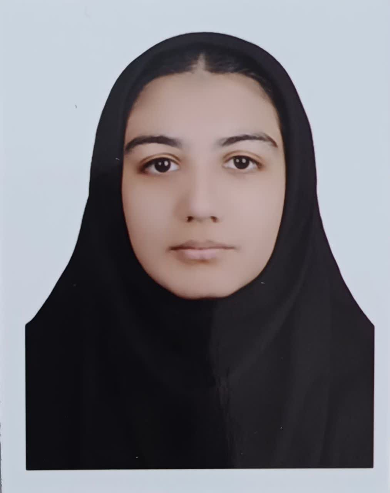
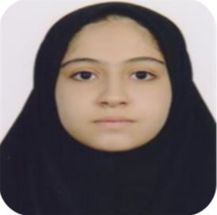
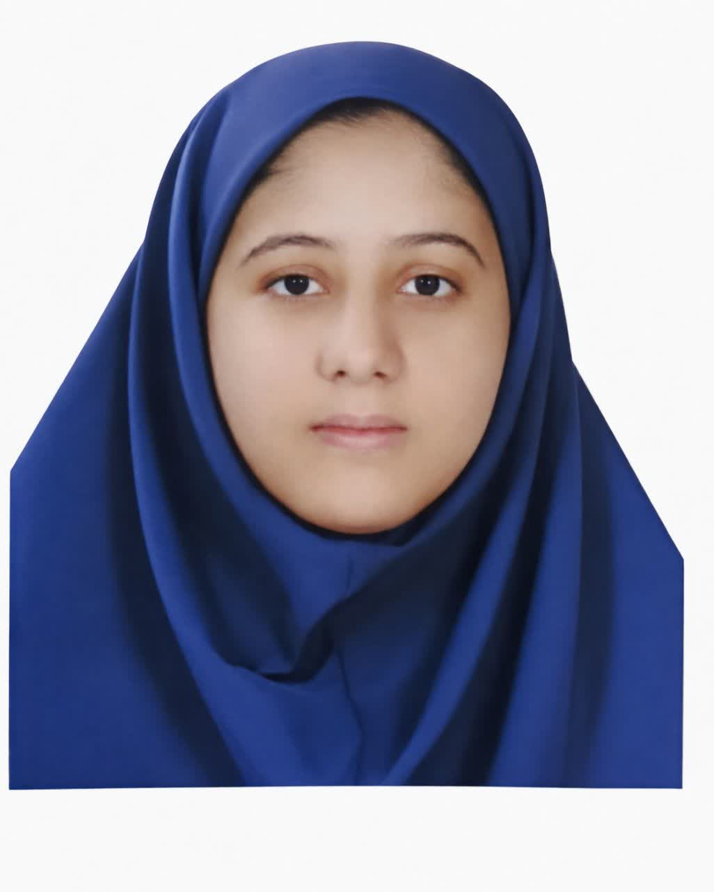
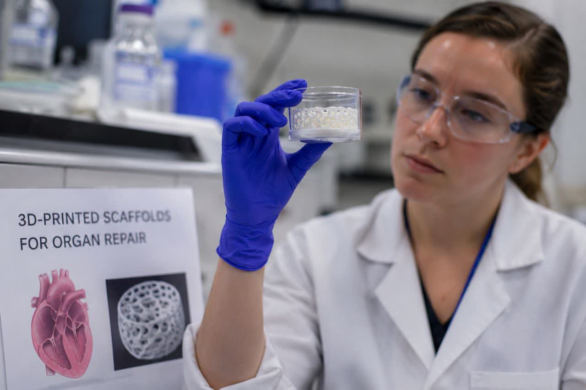
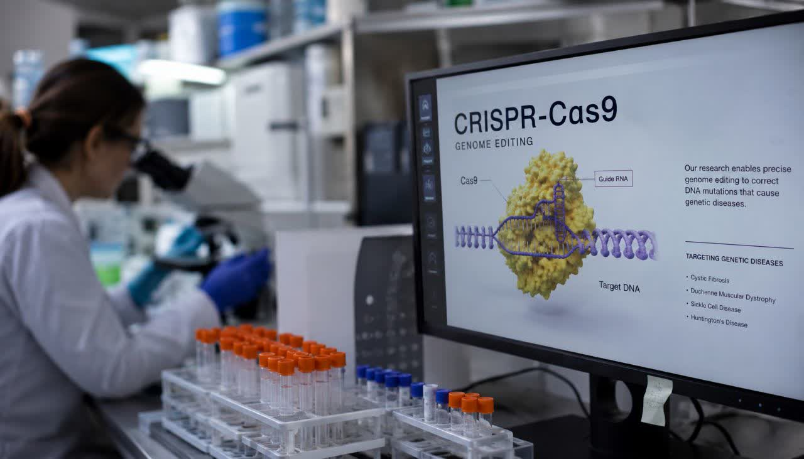

سلولهای بنیادی
نقش سلولهای بنیادی در درمان بیماریهای عصبی
مروری بر پیشرفتهای اخیر در استفاده از سلولهای بنیادی برای ترمیم آسیبهای نخاعی و مغزی.
مطالعه مقالهما مجموعهای از دانشآموزان علاقهمند به پژوهش هستیم که در حوزه سلولهای بنیادی و پزشکی بازساختی فعالیت میکنیم.
انجمن جویندگان علم با هدف گسترش دانش پژوهشی در سطح دانشآموزی از سال ۱۴۰۲ آغاز به کار کرد.
ترویج علم سلولهای بنیادی و توسعه فرهنگ پژوهش در بین دانشآموزان.
ایجاد بستری علمی برای یادگیری، آزمایش و تجربه در حوزه پزشکی بازساختی و مهندسی بافت.
تبدیل شدن به مرجع پیشرو دانشآموزی کشور در حوزه سلولهای بنیادی و پزشکی بازساختی.
از کارگاههای تخصصی تا تولید محتوای علمی؛ فعالیتهای متنوعی برای رشد پژوهشگران جوان.
برگزاری کارگاههای تخصصی با اساتید و پژوهشگران برجسته حوزه سلولهای بنیادی.
تجربه عملی در آزمایشگاههای مجهز با نظارت مربیان متخصص.
حضور و کسب مقام در جشنوارهها و مسابقات علمی استانی و کشوری.
نمایش مستندهای علمی و برگزاری جلسات نقد و بررسی.
تولید مقالات، پادکستها و ویدیوهای آموزشی در حوزه پزشکی بازساختی.
جلسات منظم بحث و تبادل نظر پیرامون جدیدترین یافتههای علمی.

مسئولیت هماهنگی محتوای علمی و انتشار مقالات انجمن را بر عهده دارد.

پژوهشگر حوزه مهندسی بافت و علاقهمند به بیوانفورماتیک.

فعال در حوزه محتوای آموزشی و تولید مستندهای علمی انجمن.
مروری بر پیشرفتهای اخیر در استفاده از سلولهای بنیادی برای ترمیم آسیبهای نخاعی و مغزی.
مطالعه مقاله
چگونه داربستهای سهبعدی میتوانند به بازسازی بافتهای آسیبدیده کمک کنند.
مطالعه مقاله
نگاهی به کاربردهای CRISPR در درمان بیماریهای ژنتیکی نادر.
مطالعه مقالهبرای همکاری، عضویت یا هر پرسش علمی از طریق راههای زیر با ما در تماس باشید. توجه : نسخه نمایشی است